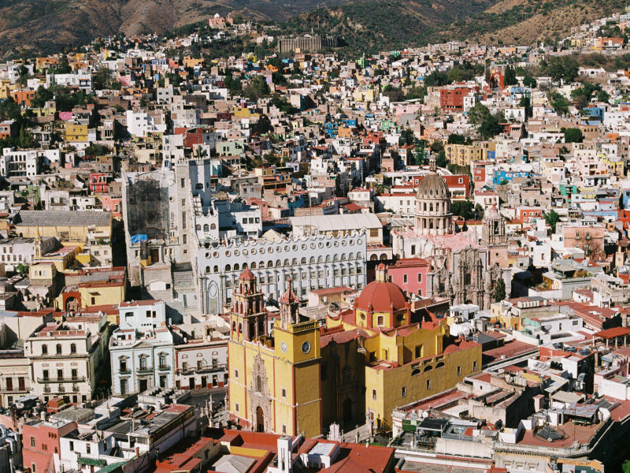

Enjoy local cuisines
Guanajuato is known for its delicious and unique cuisine that draws on the region's rich culinary traditions. Explore the many food markets, restaurants, and street vendors in the city to discover even more delicious dishes.
Guanajuato is a beautiful colonial city located in central Mexico, known for its colorful buildings, winding alleyways, and rich cultural heritage. It was once a thriving silver mining town and is now a popular tourist destination, offering visitors a mix of history, art, and stunning architecture. The city is also home to several universities, making it a vibrant and lively place with a youthful energy.
Guanajuato is known for its delicious and unique cuisine that draws on the region's rich culinary traditions. Explore the many food markets, restaurants, and street vendors in the city to discover even more delicious dishes.
Guanajuato has a rich and fascinating history that dates back to pre-Hispanic times, with evidence of human settlements in the area dating back thousands of years. Today, the city's rich history can be explored through its many museums, historic sites, and cultural events.
Guanajuato has a wealth of beautiful and distinctive colonial architecture, reflecting its rich history and cultural heritage. Get lost discovering all the notable architecture styles found in the city.
Guanajuato is located in the heart of Mexico, making it a great base for exploring other nearby destinations like San Miguel de Allende, Queretaro, and León de Los Aldama.